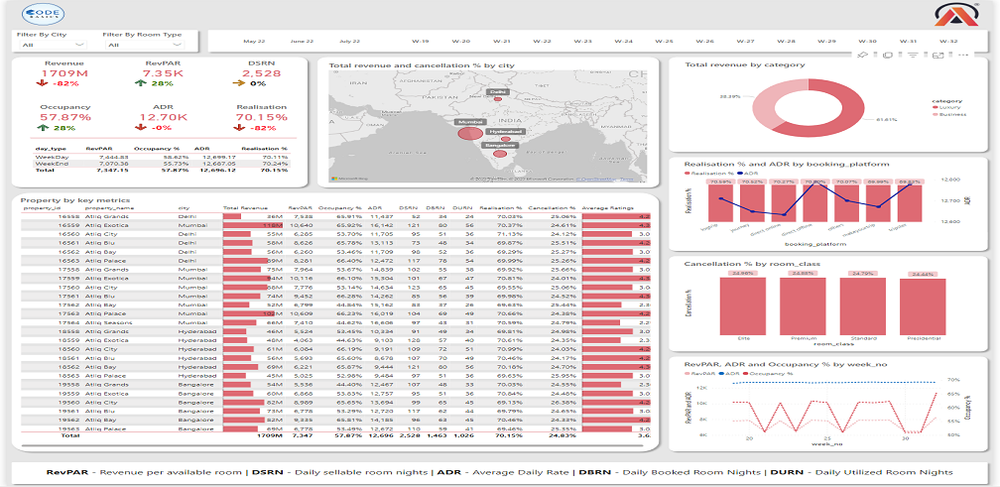
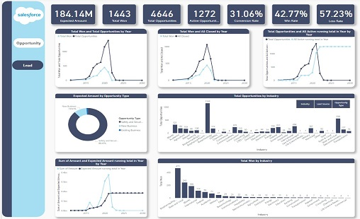
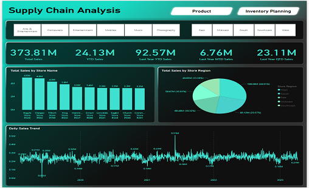
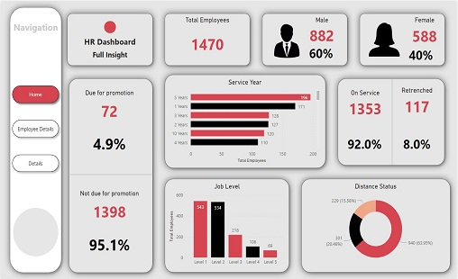
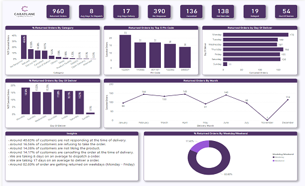
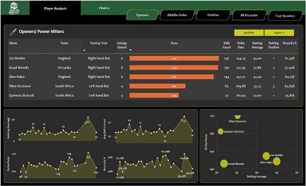
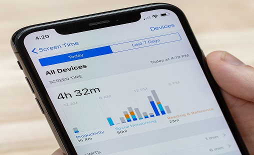
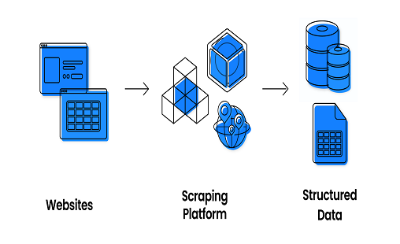

Recent Project
My task was to analyze the historical data and develop a comprehensive dashboard that would empower AtliQ Grands' revenue management team with actionable information. It was an exhilarating journey of exploring the vast dataset and collaborating closely with stakeholders to understand their requirements.


I was tasked with building a dashboard that provided crucial insights into our sales performance and was able to deliver metrics such as:
- Expected Amount
- Active Opportunities
- Conversion Rate
- Win Rate, and Loss Rate.

My task here was to analyze key performance indicators like total sales, store-wise sales, sales growth, and more, we gained valuable insights into our supply chain operations.
Our findings showed us where we could improve efficiencies and optimize inventory levels, resulting in increased profitability and a better customer experience.

Our HR dashboard provides a concise overview of key performance indicators (KPIs) related to the workforce. It covers metrics such as:
Total male and female employees, employees due for promotions, employees not due for promotions, on-service employees, retrenched employees, job levels, and service years.
This dashboard enables HR professionals and decision-makers to track important workforce trends and make data-driven decisions regarding talent management and organizational performance.

where I had the opportunity to work on the topic of Cash on Delivery (COD) customers. These customers had placed an order with COD payment option, confirmed their order twice, and upon delivery, returned it without making any payment.
The reasons behind such behavior have been highlighted in each case, and it was our task to analyze the data and suggest actionable insights that could help reduce this scenario.
Through a detailed analysis of the data, we identified several key factors contributing to the problem. These included:
- Lack of clarity on return policies
- Customers not responding at the time of delivery.
- Delayed deliveries
- Inadequate customer support.
Our Airlines Analysis Dashboard provides a concise view of key performance indicators (KPIs) crucial to the airline industry. It covers metrics such as:
- departures performed
- available seats
- transported passengers
- load factor
- airtime%
- performed vs. scheduled flights
- top 10 carriers.
This dashboard offers valuable insights into operational efficiency, capacity utilization, customer demand, and industry benchmarks, enabling informed decision-making and performance optimization.

In this project we have utilized the cricket T20 World Cup (2022) data to create insights on assembling the best 11-player team from Earth to compete against aliens. The project involved extracting data from the espncricinfo website. We then employed data transformation and cleaning methods using pandas to ensure data accuracy.
To visualize the findings, we built interactive dashboards using Power BI.
Our completed project involved analyzing airline data in MySQL. We tackled questions such as calculating load factor percentages on a yearly, quarterly, and monthly basis. We also examined load factor percentages based on carrier names and identified the top 10 preferred carriers based on passenger choices. The project provided valuable insights into capacity utilization, carrier performance, and passenger preferences within the airline industry.
A few days ago, I successfully completed a COVID-19 data analysis project using MS SQL Server. The dataset consisted of 170,000 records spread across 2 tables. During the project, I explored various questions, including the relationship between total cases and total deaths, total cases and population, countries with the highest infection rate compared to population, countries with the highest deaths compared to population, and the country with the highest death rate compared to population. The project provided valuable insights into the impact of COVID-19 and helped inform data-driven decision-making.

In a Python project, I analyzed screen time data using libraries such as pandas and plotly. By examining the data, I answered questions regarding date-wise app usage, app notifications, and app openings. Additionally, I explored the correlation between notifications and usage, providing insights into digital behavior patterns.

In a Python project, I analyzed screen time data using libraries such as pandas and plotly. By examining the data, I answered questions regarding date-wise app usage, app notifications, and app openings. Additionally, I explored the correlation between notifications and usage, providing insights into digital behavior patterns.